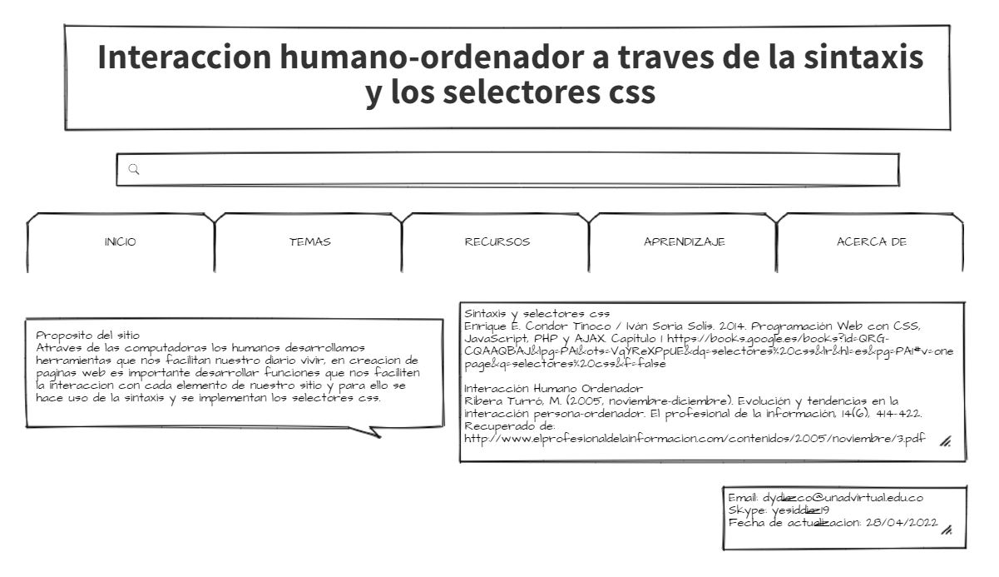

Proposito del sitio
Atraves de las computadoras los humanos desarrollamos herramientas que nos facilitan nuestro diario vivir, en creacion de paginas web es importante desarrollar funciones que nos faciliten la interaccion con cada elemento de nuestro sitio y para ello se hace uso de la sintaxis y se implementan los selectores css.
Sintaxis y selectores css
Enrique E. Condor Tinoco / Iván Soria Solís. 2014. Programación Web con CSS, JavaScript, PHP y AJAX. Capítulo 1
https://books.google.es/books?id=QRG-CQAAQBAJ&lpg=PA1&ots=VqYReXPpUE&dq=selectores%20css&lr&hl=es&pg=PA1#v=onepage&q=selectores%20css&f=false
Interacción Humano Ordenador
Ribera Turró, M. (2005, noviembre-diciembre). Evolución y tendencias en la interacción persona-ordenador. El profesional de la información, 14(6), 414-422.
Recuperado de: http://www.elprofesionaldelainformacion.com/contenidos/2005/noviembre/3.pdf
MI MOCKUP
